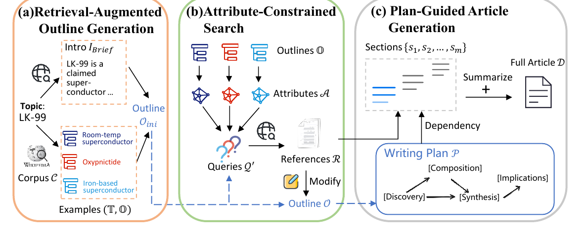

Official implementation for RAPID: Efficient Retrieval-Augmented Long Text Generation with Writing Planning and Information Discovery.

1. Paper
Hongchao Gu, Dexun Li, Kuicai Dong, Hao Zhang, Hang Lv, Hao Wang, Defu Lian, Yong Liu, and Enhong Chen. RAPID: Efficient Retrieval-Augmented Long Text Generation with Writing Planning and Information Discovery. In Findings of the Association for Computational Linguistics: ACL 2025, pages 16742-16763, Vienna, Austria, 2025.
Paper / PDF / arXiv / Project Page / Citation
RaPID is an efficient framework for generating knowledge-intensive long texts such as wiki-style articles. It combines retrieval-augmented outline generation, attribute-constrained information discovery, and plan-guided article generation to reduce hallucination, improve coherence, and lower latency.
2. Highlights
- Generates long-form, knowledge-intensive articles with retrieval support.
- Uses a writing plan to maintain global structure and thematic coherence.
- Adds attribute-constrained search for efficient information discovery.
- Supports console and batch-style file interfaces.
- Provides data resources through Google Drive for the wiki dump and encoded retrieval files.
3. Method At A Glance

RaPID first drafts a retrieval-grounded outline, then discovers missing information through attribute-constrained search, and finally generates and polishes the article under the writing plan.
4. Repository Structure
.
├── example.py # Console and batch entry point
├── requirements.txt
├── src/ # RaPID pipeline modules
├── FreshWiki-2024/ # FreshWiki benchmark data in the repository
├── secrets.toml # Local API-key config, should not be committed
└── docs/ # GitHub Pages project page5. Installation
conda create -n rapid python=3.10
conda activate rapid
pip install -r requirements.txt6. Data
Download the data files from Google Drive.
Expected directory layout:
wiki_dump/
├── encode/
│ └── merged_encoded_vectors.pkl
├── original/
│ └── combined.jsonl
└── titles.csvThe repository also includes FreshWiki-2024/ data files for batch-style experiments.
7. Quick Start
Create a local secrets.toml:
OPENAI_API_KEY = "your-llm-api-key"
GOOGLE_API_KEY = "your-search-api-key"
GOOGLE_CX = "your-search-engine-id"Console example:
python example.py --retriever google \
--output-dir ./results \
--max-thread-num 3 \
--do-clarify \
--do-research \
--do-generate-outline \
--do-generate-article \
--do-topo-generation \
--do-polish-article \
--interface consoleBatch example:
python example.py --retriever google \
--output-dir ./results \
--max-thread-num 3 \
--do-clarify \
--do-research \
--do-generate-outline \
--do-generate-article \
--do-topo-generation \
--do-polish-article \
--interface file \
--input-dir ./FreshWiki-2024/final.csv8. Reproducing Results
Use the ACL paper's evaluation setup with the downloaded wiki dump and the FreshWiki-2024 input file. The command flags above expose the main generation stages so each step can be enabled or disabled during ablations.
9. Configuration Notes
- Keep API keys in
secrets.tomland do not commit private credentials. --retriever googleuses Google search credentials fromsecrets.toml.--max-thread-numcontrols concurrent generation/retrieval threads.--interface consoleis interactive;--interface fileconsumes the input file.
10. Experimental Highlights
- The paper focuses on efficient retrieval-augmented long text generation.
- Attribute-constrained search improves information discovery without turning generation into a slow multi-agent discussion.
- Plan-guided writing keeps long-form articles structurally coherent.
11. Notes For Maintainers
- Keep
FreshWiki-2024/paths in the README aligned with the actual repository paths. - The repository includes
secrets.toml; verify that committed values are examples only before future releases. - When adding new retrievers, document the required keys in
secrets.toml.
12. Citation
If you use this code in your research, please cite:
@inproceedings{gu-etal-2025-rapid,
title={{RAPID}: Efficient Retrieval-Augmented Long Text Generation with Writing Planning and Information Discovery},
author={Gu, Hongchao and Li, Dexun and Dong, Kuicai and Zhang, Hao and Lv, Hang and Wang, Hao and Lian, Defu and Liu, Yong and Chen, Enhong},
booktitle={Findings of the Association for Computational Linguistics: ACL 2025},
pages={16742--16763},
year={2025},
address={Vienna, Austria},
publisher={Association for Computational Linguistics},
url={https://aclanthology.org/2025.findings-acl.859/},
doi={10.18653/v1/2025.findings-acl.859}
}13. Contact
- First author: Hongchao Gu.
- Repository questions: please open a GitHub issue in this repository.
14. Acknowledgments
This codebase is primarily based on the original STORM implementation. We thank the STORM authors for their valuable contributions.